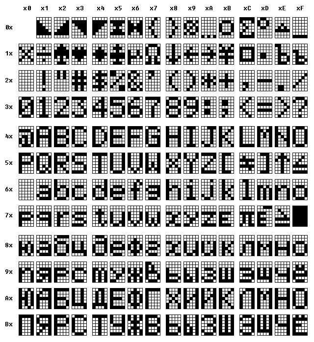

| Index | wersja polska |
All numbers on this page are hexadecimal, unless stated otherwise.

This drawing was machine generated from the ROM image.
C0 SIN D0 CHR E0 THEN F0 TEST
C1 COS D1 ASCI E1 TO F1 WHO
C2 TAN D2 RND E2 STEP
C3 ASN D3 MID E3 STOP
C4 ACS D4 GETC E4 END
C5 ATN D5 RAN# E5 LETC
C6 LOG D6 KEY E6 DEFM
C7 LN D7 CSR E7 VAC
C8 EXP D8 NEXT E8 MODE
C9 SQR D9 GOTO E9 SET
CA ABS DA GOSUB EA DRAWC
CB INT DB RETURN EB DRAW
CC SGN DC IF EC RUN
CD FRAC DD FOR ED LIST
CE VAL DE PRINT EE AUTO
CF LEN DF INPUT EF CLEAR
10 5 20 D 30 T
01 Mode 11 6 21 E 31 U
02 [S] 12 7 22 F 32 V
03 [F] 13 8 23 G 33 W
04 EXE 14 9 24 H 34 X
05 <- 15 space 25 I 35 Y
06 -> 16 . 26 J 36 Z
07 AC 17 - 27 K
08 DEL 18 + 28 L
09 ANS 19 * 29 M
0A Init 1A / 2A N
0B 0 1B EE 2B O
0C 1 1C = 2C P
0D 2 1D A 2D Q
0E 3 1E B 2E R
0F 4 1F C 2F S
Each variable (except the string variable $) occupies 8 bytes (= 4 words) of RAM.
A string variable can hold up to 7 characters.
The most significant byte of the first word contains value 60 which identifies a string variable.
The remaining bytes hold the character codes.
Spare locations are padded with zeroes.
Examples:
A$ = "" 6000 0000 0000 0000
A$ = "ABCD" 6041 4342 0044 0000
A$ = "1234567" 6031 3332 3534 3736
Numeric values are stored in packed decimal floating point format.
Structure of the first word:
Next three words contain the mantissa in range .100000000000 to .999999999999 in packed BCD format.
Examples:
A = 0 0000 0000 0000 0000
A = 1 1001 1000 0000 0000 ( .100000000000E01)
A = -1 9001 1000 0000 0000 (-.100000000000E01)
A = 100 1003 1000 0000 0000 ( .100000000000E03)
A = -100 9003 1000 0000 0000 (-.100000000000E03)
A = PI 1001 3141 5926 5360 ( .314159265360E01)
A = -PI 9001 3141 5926 5360 (-.314159265360E01)
A = 0.01 0FFF 1000 0000 0000 ( .100000000000E-01)
A = -0.01 8FFF 1000 0000 0000 (-.100000000000E-01)
A = 1/3 1000 3333 3333 3333 ( .333333333333E-00)
A = -1/3 9000 3333 3333 3333 (-.333333333333E-00)
A = 1.2E1234 14D3 1200 0000 0000 ( .120000000000E1235)
A = -9.8E-1234 8B2F 9800 0000 0000 (-.980000000000E-1233)
The string variable $ can hold up to 30 (decimal) characters.
The string stored in the memory is terminated by zero.
Example:
$ = "ABCDEFG"
41 42 43 44 45 46 47 00 00 00 00 00 00 00 00 00
00 00 00 00 00 00 00 00 00 00 00 00 00 00 00
1 word identifier 2000
1 word address of the variable (points to the end of the
variable)
2 words not used
For example, variable A is stored on the stack as 2000 8800 0000 0000.
1 word identifier 4000
1 word address of the variable (points to the end of the
variable)
1 word length of the string
1 word not used
For example, variable A$ containing the string "ABCD" is stored on the stack as 4000 8800 0004 0000.
1 word identifier 4001
1 word address of the variable 814E
1 word length of the string
1 word not used
For example, variable $ containing the string "ABCDEF" is stored on the stack as 4001 814E 0006 0000.
The same format applies as for numbers stored in numeric variables.
1 word identifier 4080
1 word address of the string
1 word length of the string
1 word not used
BASIC line begins with the line number stored in binary format in 2 bytes, ends with an end marker 00.
BASIC keywords are stored as single byte tokens, numeric values as strings of characters.
Example:
1234 FOR I=1 TO 49 STEP 1: NEXT I
D2 04 DD 4A 3D 31 E1 34 39 E2 31 3A D8 4A 00
Each time a FOR statement is executed, a FOR control structure described below is pushed on the stack. There's no stack pointer used, the FOR statement scans the stack for the first unused location instead (a free location is cleared with zeroes). NEXT scans all stack entries for matching control variable.
4 words STEP value
4 words TO value
1 word address of the first character after the FOR
statement, it's the place where the NEXT iteration
loop resumes execution
1 word address of the control variable (points to the end
of the variable), or 0000 when entry free
Executing a GOSUB statement pushes the return address (address of the first character after the GOSUB statement) on the first GOSUB stack, and the current BASIC line beginning address on the second GOSUB stack.
RETURN frees the top stack location by clearing it with value 0000.
The concept doesn't use any stack pointer either.
8000-805F 60 bytes display memory
8060-812B 66 words system stack
also used as error handle buffer
(starts from 8060, 40 bytes)
812C-814D 22 words expression evaluator stack, holds codes of
operators, grows downwards
also used as buffer for concatenated strings
(starts from 812F, 1F bytes)
also the string returned by the ANS key
814E-816C 1F bytes string variable $
816D-81AC 40 bytes input line buffer
81AD-81B3 7 bytes user defined character
81B4-81C3 8 words first GOSUB stack for return addresses,
holds 8 entries, grows upwards
81C4-81D3 8 words second GOSUB stack for BASIC line beginning
addresses, holds 8 entries, grows upwards
81D4-8223 28 words FOR stack, holds 4 entries, grows upwards
8224-822B 4 words variable ANS
822C-823F A words addresses of ends of BASIC programs 0-9
8240
8242-8243 1 word code of the parsed command/function/operator
8244-8247 2 words local temporary variables
8248-8249 1 word expression evaluator stack pointer
824A
824C
824E-824F 1 word RAN# seed
8250-8251 1 word number of variables, initialised to 1A
8252-8253 1 word top of the RAM
8254-8255 1 word position of an error
8256-8257 1 word mode
8258-8259 1 word indirect jump address (where to resume
execution after STOP)
also local temporary variable
825A-825B 1 word BASIC program counter
also local temporary variable
825C-825D 1 word address of the beginning of current BASIC line
825E-825F 1 word previous keyboard state
8260-8261 1 word pointer to the input line buffer 816D
8262-8263 1 word keyboard mode
8264-8265 1 word flags
8266 1 byte keyboard timer
8267 1 byte number printing precision
8268 1 byte selected program
8269 1 byte cursor position
826A 1 byte counter of failed attempts to identify an
apparently pressed key
From the address 826B begin BASIC programs.
Variables occupy the end of the RAM area, variable A is at the highest location.